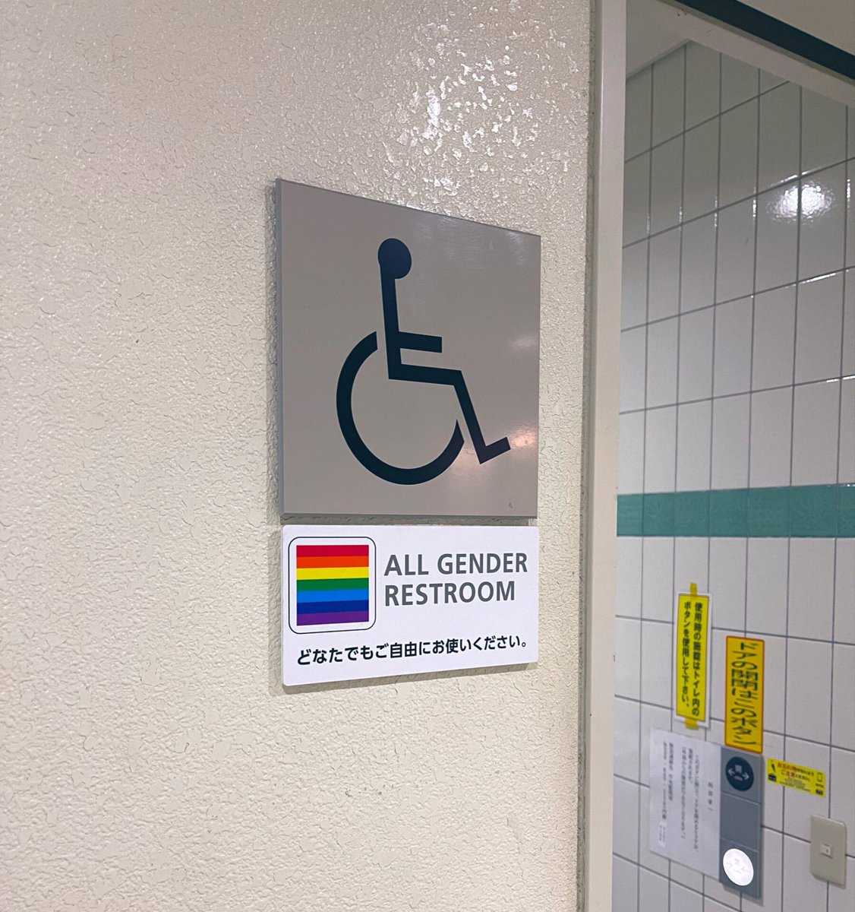

時璃風医詩🍥🌈
@hagishigure
@akaribug @linfavourite 主要是沒有這個標籤的話其實很多Real跨性別女性都怕給真正的殘疾人人群添麻煩，如果廁所能加裝這個標籤的話或者多修兩個小一點的單間的話我想應該能有效解決很多這方面的問題。

akaribug
@akaribug
@linfavourite @hagishigure 他有沒有吃藥, 誰知? 等你看到他勃起侵犯你時已經太遲了, 而且有些露體狂未必想侵犯人, 只是讓女生看到自己的下體就興奮。
我認為完成手術後, 她就應視為女性, 就算不服藥也應進女廁。未完成手術而不想進男廁的, 可以去殘廁, 排隊還比女廁快得多!